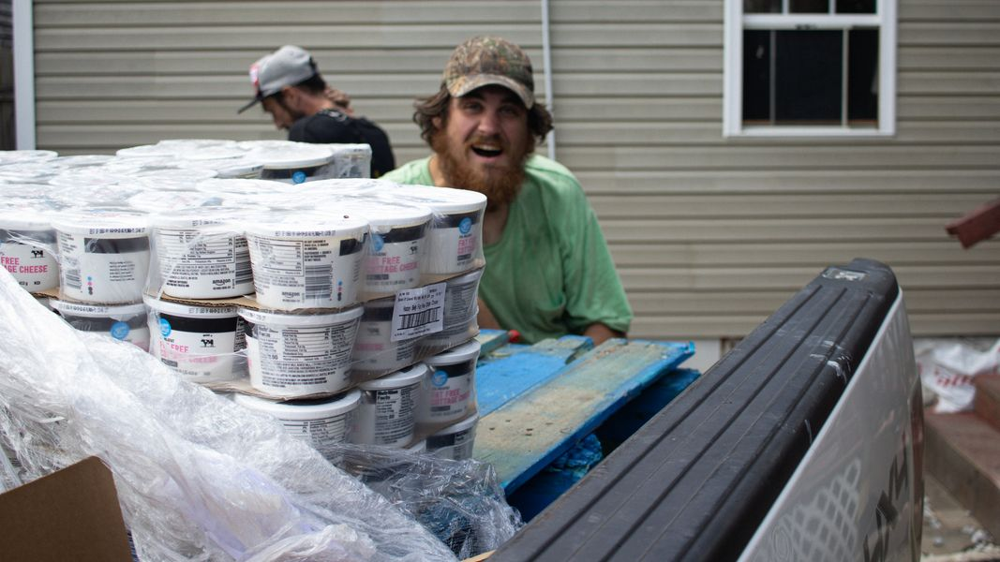

Timeline photos
I've been meaning to tell you this story for a few days.
This is Country (he's here helping unload food from the Food Bank).
Country has been in a bad way physically.
I've never seen gangrene in person until I saw it on Country.
He was becoming filled with infection. You literally could smell it on him.
All of us would try and try to get him to go to the hospital. But he'd never go.
Well, in the last couple weeks he went.
They amputated all of his toes on one foot. And 3 toes on the other foot.
I talked to him on the phone recently. I asked him how he was and his response was: "I feel GREAT!"
You could hear the relief in his voice. It was amazing.
I understand his sister came from Texas to see him. The word is that if he can stay off drugs she will take him back home to Texas.
Country is a gentle giant. He's kind and sweet and good natured.
I find that sometimes unfortunate events like this can have a jolt to someone's life. It's no guarantee it will work. But sometimes it does.
I truly hope for the best for Country.
But he does have one new problem.
He has always had the biggest feet I've ever known a person to have. Size 17-18.
He's now going to be a size 17 on one foot and a size 12 on another foot. I don't think there is ever any hope that man is going to have a decent pair of shoes.
Good luck Country. I love you.